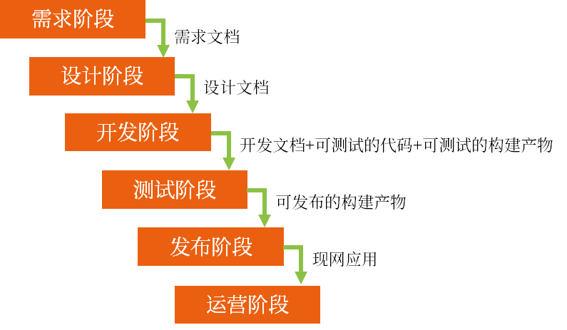
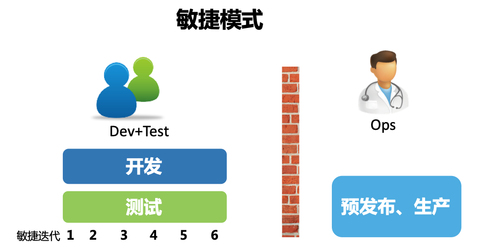
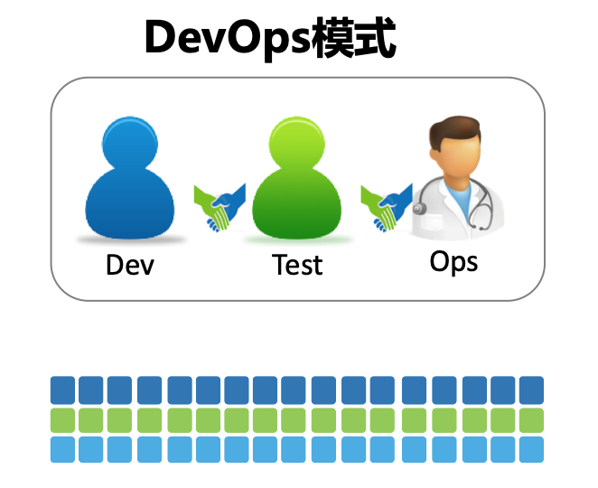

软件工程三个重要发展阶段
瀑布式开发模式

瀑布模式，是软件开发过程中常用的一种传统开发方法。在瀑布模式中，项目开发过程被划分为一系列有序的阶段，按照线性顺序依次完成，每个阶段都有明确的任务和交付物。它的理念是软件开发的规模越来越大，必须以一种工程管理的方式来定义每个阶段，以及相应的交付产物和交付标准，以期通过一种重流程，重管控，按照计划一步步推进整个项目的交付过程。
瀑布模式中，项目开发通常被分为需求阶段、设计阶段、开发阶段、测试阶段、发布阶段、运营阶段。每个阶段依次推进，每个阶段完成后才会进入下一个阶段，并伴随着交付产物：
- 需求阶段交付的一般是经过评审后的需求文档；
- 设计阶段交付的一般是设计文档和产品原型；
- 开发阶段交付的是可测试的代码、可测试的构建产物和开发文档；
- 测试阶段交付的是可发布的构建产物，例如：二进制文件、容器镜像；
- 发布阶段交付的是正在运行的现网应用。
可是，随着市场环境和用户需求变化的不断加速，这种按部就班的方式有一个严重的潜在问题。
软件开发活动需要在项目一开始就确定项目目标、范围以及实现方式，而这个时间点往往是我们对用户和市场环境信息了解最少的时候，这样做出来的决策往往带有很大的不确定性，很容易导致项目范围不断变更，计划不断延期，交付上线时间不断推后，最后的结果是，即便我们投入了大量资源，却难以达到预期的效果。
从业界巨头 IBM 的统计数字来看，有 34% 的新 IT 项目延期交付，将近一半的应用系统因为缺陷导致线上回滚，这是一件多么令人沮丧的事情。
敏捷式开发模式

基于瀑布模式的问题，敏捷的思潮开始盛行。它的核心理念是，既然我们无法充分了解用户的真实需求是怎样的，那么不如将一个大的目标不断拆解，把它变成一个个可交付的小目标，然后通过不断迭代，以小步快跑的方式持续开发。
与此同时，将测试工作从研发末端的一个独立环节注入整个开发活动中，对开发交付的内容进行持续验证，保证每次可交付的都是一个可用的功能集合，并且由于质量内建在研发环节中，交付功能的质量也是有保障的。
很显然，敏捷是一种更加灵活的研发模式。经常有人会问，敏捷会直接提升团队的开发速度吗？答案是否定的。试想一下，难道说采用了敏捷方法，研发编码的速度就会提高两倍甚至三倍吗？回想一下很多年前在 IT 行业广为流传的“人月神话”，我们就能发现正确的认知有多么重要。
敏捷之所以更快，根本原因在于持续迭代和验证节省了大量不必要的浪费和返工。关于这一点，我会在敏捷和精益的相关内容中做更加详细的介绍。
说到底，敏捷源于开发实践，敏捷的应用使得开发和测试团队抱团取暖。可是问题又来了，开发和测试团队发现，不管研发的速度变得多快，在软件交付的另一端，始终有一群人在冷冰冰地看着他们，一句“现在没到发布窗口”让多少新开发的功能倒在了上线的门槛上。
毕竟，无论开发了多少“天才”的功能，如果没有经过运维环节的部署上线，并最终发布给真实用户，那么这些功能其实并没有什么用。
DevOps 模式

于是，活在墙的另一端的运维团队成了被拉拢的对象。这些在软件交付最末端的团队始终处于一种“背锅”的状态，他们也有改变的意愿，所以 DevOps 应运而生，也就是说，DevOps 最开始想要打破的就是开发和运维之间的对立和隔阂。
在传统模式下，度量开发团队效率的途径就是看开发完成了多少需求。于是，开发为了达成绩效目标，当然也是为了满足业务需求，不断地堆砌新功能，却很少有时间认真思考这些功能的可运维性和可测试性，只要需求状态流转到开发完成就万事大吉了。
而对于运维团队而言，他们的考核指标却是系统的稳定性、可用性和安全性。但现代 IT 系统是如此复杂，以至于每一次的上线发布都是一场战役，整个团队如临大敌，上线失败的焦虑始终如影随形。
很多时候，我们并不知道上线之后会发生什么，只能按照部署手册一步步操作，完成之后就听天由命。所以，每逢大促活动，就会有各种“拜服务器教”的照片广为流传。
另一方面，在无数次被开发不靠谱的功能缺陷蹂躏得体无完肤之后，运维团队意识到，变更才是影响他们绩效目标的最大敌人。于是，预先设立的上线窗口就成了运维团队的自留地，不断抬高的上线门槛也使得开发团队的交付变成了不可能完成的任务，最后，“互相伤害”就成了这个故事注定的结局。
从一开始想要促进开发和运维的协作，团队慢慢发现，其实在整个软件交付过程中，不仅只有开发和运维，业务也是重要的一环。
比方说，如果业务制定了一个不靠谱的需求，那么无论开发和运维怎样协作，得到的终究是一个不靠谱的结果，以及对人力的浪费。可是业务并不清楚用户的真实情况，于是运维团队慢慢转向运营团队，他们需要持续不断地把线上的真实数据和用户行为及时地反馈给需求团队，来帮助需求团队客观评估需求的价值，并及时作出有利于产品发展的调整，这样一来，业务也被引入到了 DevOps 之中，甚至诞生了 BizDevOps 这样一个专门的词汇。
那么，既然沟通协作放之四海皆准，安全也开始积极地参与进来。安全不再是系统上线发布之后的“定时炸弹”，而是介入到整个软件开发过程中，在每个过程中注入安全反馈机制，来帮助团队在第一时间应对安全风险，那么，对于安全团队来说，DevSecOps 就成了他们眼中的 DevOps。
这样的例子比比皆是，包括职能部门、战略部门等，都纷纷加入其中，使得 DevOps 由最开始的点，扩展为线，再到面，不断发展壮大。每个人都参与其中，这使得 DevOps 成了每一个 IT 从业人员都需要学习和了解的知识和技能体系。
说到最后，我还是希望基于我对 DevOps 的理解，给出一个我自己的“定义”：
DevOps 是通过平台（Platform）、流程（Process）和人（People）的有机整合，以 C（协作）A（自动化）L（精益）M（度量）S（共享）文化为指引，旨在建立一种可以快速交付价值并且具有持续改进能力的现代化 IT 组织。
DevOps 强调运维与开发团队协作、相互协助，然而传统的模式是开发人员只顾开发程序，运维只负责基础环境管理和代码部署及监控等，其并不是为了一个共同的目标而共同实现最终的目的，而 DevOps 则强调团队作战，即无论是开发、 运维还是测试，都为了最终的代码发布、 持续部署和业务稳定而付出各自的努力， 从而实现产品设计、开发、测试和部署的 良性循环，实现产品的最终持续交付。